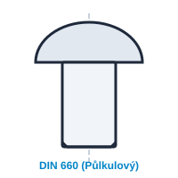

Plné nýty s půlkulovou hlavou
Klasické plné nýty s půlkulovou hlavou pro pevná nerozebíratelná mechanická spojení plechů, nosníků a konstrukčních prvků s vysokou smykovou pevností.
Ocel třídy 11 103 / 11 107Hliník Al 99,5Mosaz CuZn37